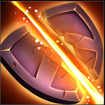
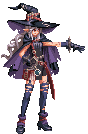
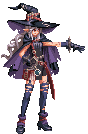

Change Your Character
-

Icebolt - 0
Deals 110% Elemental DMG (+250) to the target and restore 20~25 energy.Rain of Fire - 30
Deals 150% Elemental DMG (+450) to the target and makes it receive 30% more DMG for any subsequent direct attack.Thunderstorm - 60
Deals 510% Elemental DMG (+1950) to the target. With Bane of Death, this skill's DMG is increased by 60%. Also, increases the amount of healing by 50% for the next heal skill.
Bane of Death - 40
Deals 150% Elemental DMG (+150) and another 120% DMG to the target every turn for 3 turns.Arcane Erudition - Passive
While Bane of Death effect is active, reduces the target's DEF by 35%. The Elemental Mage is the master of the elements. She can form, control, and dissipate the elements at ease. Her skills center around applying several different effects and making use of their connections for the best outcome. An easy to play class, per se.
-
Arrow of Light - 0
Deals 100% DMG (+200) to the target. Marks it with a Hunter's Mark. Restores 10~20 energy.
Bloodshed - 30

Deals 200% DMG (+470) to the target and another 125% DMG to the target every turn for 3 turns.Piercing Shot - 60
Deals 480% DMG (+1750) to the target. If the target is under Hunter's Mark, removes the mark and deals an additional amount of 250% DMG. Also, if the target is under Bleed, this skill's DMG is increased by 50%.
Hunter's Instinct - 40
Increases Critical DMG by 120% for 3 turns and Critical Rate until the next Crit Hit by 30% and mark the enemy with Hunter's Mark.Forest's Favor - Passive
After Hunter's Mark is removed, heals self by 50% of Max HP. The Forest Archer, or the Queen of the Elves, is the ultimate hunter and the best among her peers. With skills that focus on bringing the best damage outcome, you might find this class' survivability quite difficult to maintain. However, if played right, this is one of the most rewarding classes.
-

Righteousness - 0
Deals 120% DMG (+240) to the target and decreases its ATK by 20% for 2 turns and mark it with a Light mark. Restores 10~20 energy.Rectitude - 30
Deals 140% DMG (+300) to the target and marks it with a Light mark. Also, increases self DEF by 30% for 2 turns.
Judgment - 60
Deals 330% DMG (+1315) to the target. For each Light mark on the target, deals an additional 100% of DEF as DMG and removes all Light marks.
Honor - 40
Deals 160% DMG (+500) and another 250% of DEF as DMG if more than 5 Light Marks are present. After use, removes 2 Light Marks. After that, grants a shield of 50% of his Max HP.Grace - Passive
Each Lightmark removed restores 5~10 Energy.
Paladin of Light is one of those classes which seem casual but actually very strategic. The more wisely you use his skills, the faster you get to end the fight. This class comes with minimum offensive stats while having abilities that can send you to the extreme. Recommended for people who prefer strategy over power.
-

Soul Siphon - 0
Deals 110% DMG (+280) to the target and marks it with a Soul Siphon mark. Restores 20 energy if Moon buff is on, else restores 10 energy.Mind Gleaning - 30
Deals 180% DMG (+700) to the target. If the target is under Soul Siphon mark, restores HP by 250% of DMG dealt. Places a Mind Gleaning mark on the enemy.Painless Death - 80
Deals 380% DMG (+1500) to the target. If:
-the target is under Soul Siphon, deals an additional 90% DMG and restores HP by 70% of DMG dealt. Then, removes the mark.
-the target is under Mind Gleaning, deals an additional 80% DMG and restores 50 energy. Then, removes the mark.
-the target is under both marks, deals an additional 200% DMG and restores both HP and energy to full. Then, removes all marks.
Song of Moonlight - 40
Deals 150% DMG (+600) to the target. If it has any mark, gains a Moon buff for 2 turns to increase ATK by 50%.Forbidden Practice - Passive
When both Marks are active, increases Critical Rate by 40% and Critical DMG by 100%. Take one to know one. That's what they said. You take my blood, I'll take your life. The Necromancer boasts self healing skills and marking abilities that will drive your gameplay strategy to its best. Recommended for hardcore player.
-
Blood Embrace - 0
Deals 120% DMG (+310) to the target. If his HP is less than 50%, gain 1 Blood Sigil. Restores 10~13 Energy.Rosemary's Gift - 30
Deals 160% DMG (+670) to the target. Deals an additional amount of 10% of his loss HP as DMG. Gain 2 Blood Sigils.Ichor Retaliation - 70
Deals 350% DMG (+1200) to the target. For each Blood Sigil, deals an additional of 25% DMG and 2% of Max HP. Removes all Blood Sigils after that. For each removed Blood Sigil, grants a shield of 2% of his Max HP.
Crimson Vitality - 60
Increases his Max HP by 30% for 3 turns. Also, grants a shield of 30% of his lost HP.Hardened Will - Passive
Each Blood Sigil will decrease his incoming DMG by 2% (up to 20%) and increases his DMG by 3% (up to 30%). The Knight of Blood gets stronger the lower his health gets. Challenge the extremity with this class to prove yourself a hardcore strategist.
-
Sacred Anthems - 0
Deals 100% DMG (+230) to the target. Applies 2 random Holy Debuffs from this list:
- Purity: decreases ATK by 4%.
- Justice: decreases DEF by 4%.
- Faith: increases incoming DMG by 2%.
Each debuff can stack up to 10 times. Also restores 15 Energy.
Revered Presence - 40
Heals for 3040% of ATK + 30% of lost HP. Over-healed amount will be converted into Holy Shield.
Holy Chant - 80
Deals 400% DMG (+1515) to the target and removes all debuffs. For each removed debuff, deals an additional of 100% DMG.Transcendent Hymn - 50
Stuns the target for 2 turns and after that, provides a Reflect buff that reflects 50% of received DMG for 3 turns.Divine Soprano - Passive
When total debuffs reach more than 20, total DMG received by the target increases by 30%. Holy Swordsinger that descends from the Sun. She uses a variety of debuff and healing skill that makes it easier for players to challenge the boss.
© 2022 - Khang Nguyen - v2.0

 
